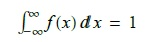
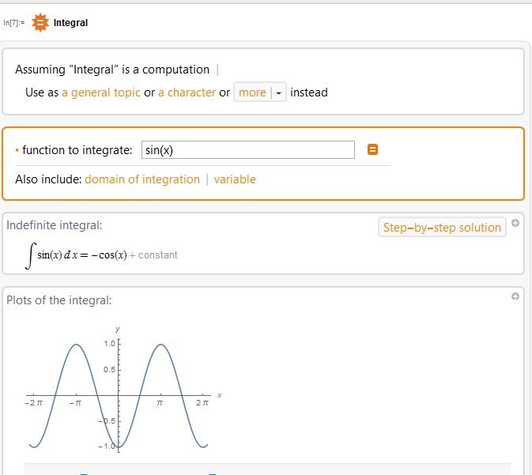
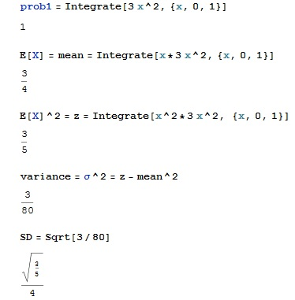

Sannsynlighet, forventning, variansen, standardavviket. Definisjon:
1. X tar verdier i et intervall, eller i hele ℝ.
2. f(k)≥0
3. En sannsynlighetstetthet funksjon f(x) må oppfylle kravet

Det kan anvendes mange av formlene definert for en diskret fordeling på en generell kontinuerlig sannsynlighetsfordeling f(x) ved at summen over diskrete måleverdier erstattes med integral. Wolfram Language inneholder et meget kraftig systemverktøy for integrering. Den kan ta nesten hvilken som helst integral i form av standarte matematiske funksjoner. En kan få integraltegn, greskebokstaver, kvadratrot tegn osv ved hjelp av kombinasjonen: Esc, førstebokstaver til tegn du trenger, Esc. Standard integralprogrammering er
In[1]:=Integrate[funksjon ønsket integrert, grenser, {x-verdi, y-verdi når dobbel integral skal beregnes}].
For mer informasjon se Wolfram Documentation Center/Integral
for beregning uten programmering tast
In[1]:= ==Integral

Eksempel med gitt mengden M og funksjonen f
Finn sannsynligheter, μX, σ2X, σX for M={0,0.5} og f(x)=3x2 x∈[0,1] og lik 0 ellers
1. Integrer funksjonen for å finne sannsynligheten
In[1]:=prob1 = Integrate[3 x^2, {x, 0, 1}]
2. For å finne μX=E[X]. Skriv som innput
In[2]:= Integrate[x*3 x^2, {x, 0, 1}]
3. For E[X2].
In[3]:= Integrate[x^2*3 x^2, {x, 0, 1}]
4. Programmer σ2X
In[4]:=E[X]^2 - mean^2
5. Ta kvadratrot av svaret for å finne σX.
In[5]:= kombinasjon Esc Sqrt Esc [σ2X-verdi]
